4 Serving LLMs with predictable performance
Users of the grounded-answer service expect the first words of an answer within about a second and a steady stream after that. Part I produced a recoverable model checkpoint. A serving engine loads that saved model and handles independent requests of different lengths, latency targets and per-request attention memory, while the fleet introduces new versions through rolling releases.
The serving engine shares limited GPU memory among requests that arrive and finish at different times. Keeping response time within its target requires choices about scheduling, memory, routing, and capacity. A release must also be reversible if those choices or the new model fail under live traffic.
Note
Chapter map: predictable inference serving
- 4.1–4.3: What does “fast enough” mean for a streamed answer, which component handles each part of a request, and which stage limits it?
- 4.4–4.6: How does the engine keep GPUs busy with requests of different lengths, where does per-request memory go, and how does a model larger than one GPU fit?
- 4.7–4.8: How are requests routed to replicas that already hold useful state, and how does the fleet grow without long cold starts?
- 4.9: How does a new model version reach users so that it can be reversed?
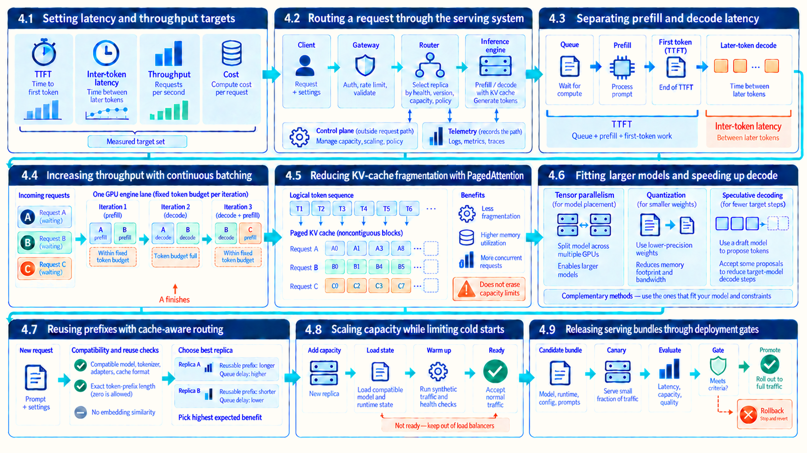
4.1 Setting latency and throughput targets
The serving design starts from the workload and the service’s business targets. Latency, throughput, memory, quality and cost measurements give engine settings their objectives.
Before generating an answer, the engine uses the tokenizer introduced in Section 1.2 to convert the prompt into a sequence of integer token IDs.
- Token: One unit of that sequence. Depending on the tokenizer, a word may be one token or several pieces, and punctuation or a special marker may also be a token.
With weights fixed for inference, the model uses the prompt IDs to select a next token ID, adds it to the sequence, and repeats. The tokenizer converts generated IDs back to text for the response.1 The prompt length, later cache length, output rate, and output-token cost in this chapter all count these units.
- Prefill: Prompt processing that prepares the retained attention information used to generate an answer.
- Decode: The generation loop after prefill. In the baseline used here, it extends each active answer by one next-token step at a time.
- Key-Value (KV) cache: The attention key and value tensors retained from earlier tokens so decode does not recompute attention state for the whole prefix.
- Service Level Objective (SLO): A measurable target for service behavior over a stated window, such as keeping the 95th-percentile time to first token below a threshold. The 95th percentile, written p95, is the value at or below which 95% of the observed request times fall.2
Time to First Token (TTFT): Elapsed time from request admission until the first generated token becomes available.
Inter-Token Latency (ITL): Time between successive generated tokens during decode, commonly summarized as a distribution.3
Throughput: Completed useful work per unit time, such as output tokens per second per GPU or requests per second at a defined workload.
The business objective combines accepted work per GPU with latency, quality, safety, and availability. A benchmark that doubles tokens/s but violates the user’s ITL target does not improve that service.
\[ T_{\mathrm{request}} ≈ \mathrm{TTFT} + \left(N_{\mathrm{out}}-1\right) \cdot \mathrm{ITL} \tag{4.1}\]
\(T_{\mathrm{request}}\) is the time from admission to the last token, and \(N_{\mathrm{out}}\) is the number of generated tokens. The first token arrives after \(\mathrm{TTFT}\), and each of the remaining \(N_{\mathrm{out}}-1\) tokens adds one inter-token interval, here taken as the average \(\mathrm{ITL}\) for the request.
Note
Example: prefill and decode latency for interactive serving
The illustrative timings follow one request that generates 80 tokens:
- Queue: The request waits 120 ms.
- Prefill: A 2,000-token prompt takes 280 ms including scheduling and first-token work in this simplified decomposition.
- First token: Queueing, prefill, scheduling, and first-token work produce a measured TTFT of 400 ms.
- Later tokens: The remaining 79 intervals average 22 ms, adding 1,738 ms.
- Total: 400 + 79 × 22 = 2,138 ms.
- Interpretation: Later-token decode dominates total time even though the first-token experience remains visible as a separate measure.
- Conclusion: A single latency number hides the stage that limits the request.
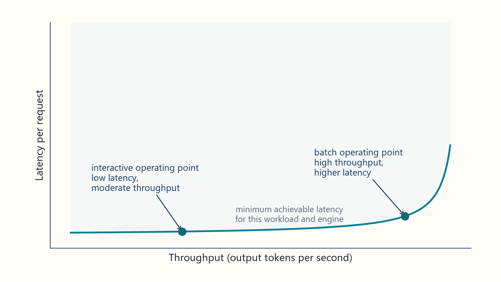
Latency distributions reveal behavior that a mean can hide. p95 and p99 refer to the 95th and 99th percentile estimates. p99 TTFT estimates the 99% position in ordered observed first-token times. Its value depends on sample count and the calculation rule. These values expose queue spikes and long prompts, while ITL exposes decode instability. A complete throughput measurement states prompt and output lengths, concurrency pattern, engine configuration, GPU type, quantization, and whether routing and gateway overhead are included.
A serving benchmark usually reports tokens per second, while capacity plans such as the replica estimate of Section 1.5 need requests per second and cost. Dividing the sustained output-token rate by the average number of output tokens per request gives the request rate, provided the benchmark used the production mix of prompt and output lengths.
\[ C_{\mathrm{1M}} = \frac{P_{\mathrm{hour}} \cdot 10^{6}}{3600 \cdot R_{\mathrm{tok}}} \tag{4.2}\]
\(C_{\mathrm{1M}}\) is the compute cost of one million output tokens, \(P_{\mathrm{hour}}\) is the hourly price of the GPUs in one replica, and \(R_{\mathrm{tok}}\) is the replica’s sustained output-token rate while it meets its latency objectives. The factor 3,600 converts seconds to hours. Prompt tokens also consume prefill time, which the measured \(R_{\mathrm{tok}}\) already reflects when the benchmark includes realistic prompts.
Note
Example: converting tokens per second to requests and cost
A one-GPU replica serving the 8-billion-parameter model is load-tested with the production prompt and output mix:
- Measured rate: The replica sustains 2,400 output tokens/s while p95 TTFT and ITL stay inside their objectives.
- Request rate: Answers average 300 output tokens, so 2,400 ÷ 300 = 8 requests/s. This is the per-replica figure used in the Section 1.5 sizing example.
- Cost: At an illustrative $4 per GPU-hour, one million output tokens cost $4 × 10⁶ ÷ (3,600 × 2,400) \(\approx\) $0.46.
- Sensitivity: If a policy change doubles the average answer to 600 tokens and the replica still sustains 2,400 output tokens/s within the same latency objectives, it serves 4 requests/s. At Section 1.5’s 75% utilization target, the 60-request/s workload then needs 20 demand replicas rather than 10. Keeping two spare replicas raises the starting deployment from 12 to 22. Compute cost per output token stays at about $0.46 per million only under that fixed-rate assumption. A changed prompt/output mix needs a new benchmark because its sustained token rate may change.
- Conclusion: Token rate, answer length, and latency objectives together set request capacity and cost.
4.2 Routing a request through the serving system
The serving objective identifies what users and operators measure. Those measurements cross several components, and each component makes a different decision. One request passes through admission, routing, and execution, while fleet management and evidence collection run around that data path.
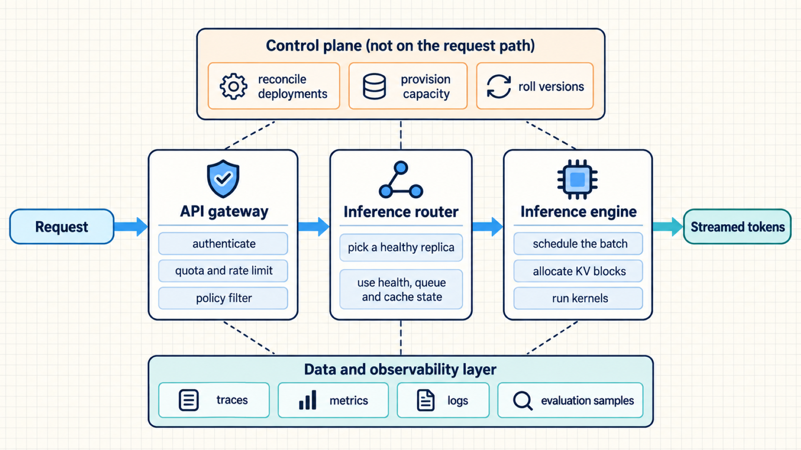
The request path can be divided into five responsibilities, which a deployment may combine:
- API gateway: The request-entry component that authenticates identities, validates the request format, enforces quotas and rate limits, applies policy filters, and records billing identity.
- Inference router: The component that selects an eligible engine replica using health, queue, model placement, and cache-state evidence.
- Inference engine: The runtime that tokenizes, schedules batches, allocates KV-cache blocks, executes kernels, and streams generated tokens.
- Control plane: The management component that reconciles desired model deployments, provisions capacity, distributes weights, rolls versions, and coordinates recovery.
- Data and observability layer: stores request traces, metrics, logs, audit events, evaluation samples, and release evidence.
The router lies on the live request path, and the control plane normally does not. Healthy replicas can continue serving during a temporary control-plane outage only if required routing/configuration state is available and their data-path dependencies do not require a synchronous control-plane lookup. Even when provisioning is healthy, a router without fresh health or queue state can keep sending traffic to an overloaded or corrupt engine.
| Signal | First responsible component | Downstream action |
|---|---|---|
| Invalid authentication credential or exceeded quota | Gateway | Rejection before GPU work |
| Prefix already cached | Router | Estimate reuse and queue delay among eligible replicas |
| KV blocks nearly exhausted | Engine | Admission throttling, eviction, or pressure reporting |
| Sustained queue growth | Router + control plane | Hotspot avoidance and capacity scaling |
| Candidate bundle fails quality case | Release gate | Promotion stops, stable version retains traffic |
Note
Request trace: excluding a replica with a stale health record
The trace follows one request through the gateway and router when one replica’s health information is too old to trust:
- The gateway accepts request
req-1842for serving bundlesb-27and records tenant and quota state. The router treats replicas A and B as compatible, but A’s health record is older than the 10-second freshness limit. - Replica A is excluded. Replica B receives the request, allocates KV blocks, streams tokens, and emits completion state. If every compatible health record is stale, the router returns an unavailable response instead of guessing that an endpoint is healthy.
- Conclusion: The router’s decision is only as good as the freshness of the state it reads, so freshness is part of eligibility.
4.3 Separating prefill and decode latency
The request path identifies the engine as the component that turns admitted text into tokens. Inside the engine, queueing, prompt processing, and token generation stress different resources.
Prefill is the parallel forward pass over prompt tokens that computes hidden states and initializes attention key/value tensors. Decode then reads the retained state and, in the baseline autoregressive decoder discussed here, produces one next token per active sequence iteration. Speculative decoding, in Section 4.6, changes that pattern.
Prefill performs large matrix operations over many prompt tokens and is commonly compute-bound. Decode repeatedly streams model weights and KV state for a small amount of arithmetic per active sequence, so memory bandwidth and batch width often dominate.4 Queueing is controlled by admission and scheduler policy rather than a GPU kernel.
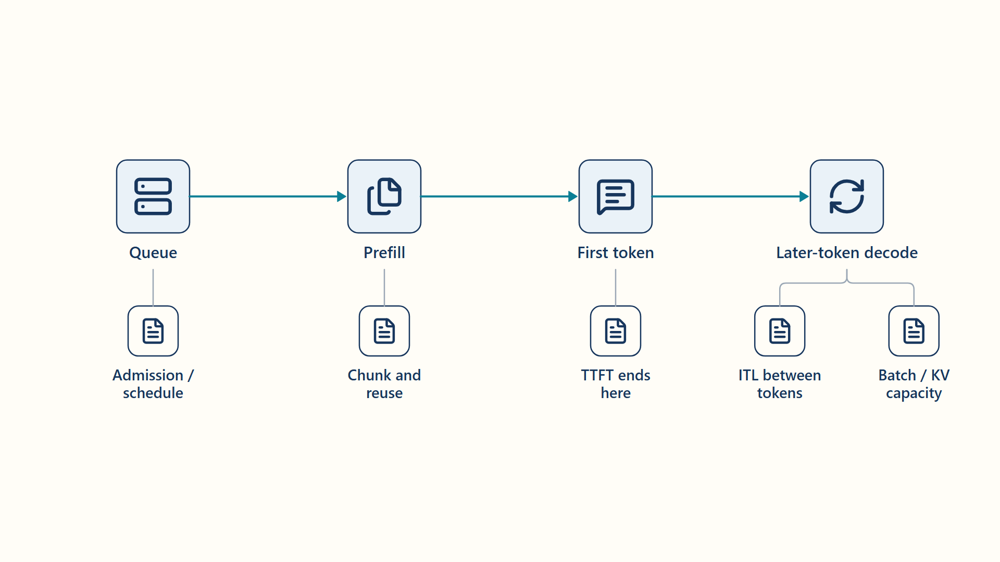
A useful latency diagnosis identifies the stage. Long queue delay suggests admission, capacity, or scheduling pressure. Long prefill suggests long prompts, poor prefix reuse, or insufficient prefill compute. High ITL suggests decode batching, memory bandwidth, cache pressure, or per-token synchronization.
Note
Workload comparison: short-context versus long-context serving dynamics
Two requests with different prompt and answer lengths are limited by different stages:
- Long prompt: A 12,000-token prompt spends 1,450 ms in prefill and then emits 20 tokens at 18 ms between tokens.
- Long answer: A 600-token prompt spends 110 ms in prefill and then emits 180 tokens at 24 ms between tokens.
- Comparison: The first request is prefill-dominated, and the second is decode-dominated even though its prompt is much smaller.
- Control choice: Prefix reuse or more prefill capacity helps the long-prompt request, while decode batch width and KV pressure are more relevant to the long-answer request.
- Conclusion: The useful optimization follows prompt and answer-length distributions as well as request volume.
The grounded-answer service can produce the long-prompt workload when it includes many retrieved passages. In that workload, prefill time and prefix reuse may matter more than for a chat service with short prompts. The measured prompt distribution decides.
4.4 Increasing throughput with continuous batching
The request stages have distinct costs. With a fixed batch, waiting requests cannot replace finished requests until the batch completes, leaving those finished slots unused. Continuous batching recovers those slots through iteration-level admission and completion.
- Continuous batching: A serving scheduler that adds waiting sequences and removes finished sequences between decode iterations.5
The scheduler applies both a request-count ceiling and a token budget. It chooses a mix of new prefill tokens and active decode tokens for the next iteration. Wider batches can increase throughput by reusing weight reads across sequences. Queue delay can fall as capacity improves or rise under saturation, and larger iterations can increase ITL. The outcome depends on admission, token budget, and workload.
- Chunked prefill: Splitting a long prompt into smaller prefill chunks so decode work from other requests can be interleaved.6
Chunked prefill protects interactive decode traffic from a long prompt. The trade-off is more scheduling overhead and potentially less efficient prompt computation. Its production behavior depends on the actual mix of prompt sizes and latency classes.
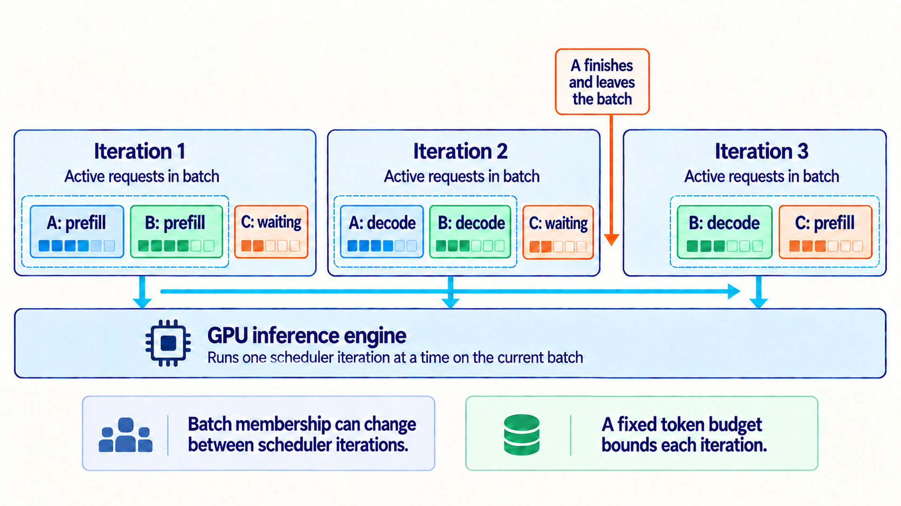
Note
Batch iteration trace: continuous batching sequence
Three requests pass through three scheduler iterations under a fixed token budget:
- Iteration 1 admits requests A and B for prefill. Iteration 2 decodes A and B while request C waits because the token budget is full.
- A finishes after iteration 2. Iteration 3 removes A, admits C’s prefill chunk, and continues B’s decode. The active set changes without waiting for B to finish.
- Conclusion: The expected effect is fewer empty execution slots, and the measured guardrails are queue delay and ITL for each latency class.
Code example: Illustrative vLLM 0.10.2 V1 settings for this workload.
# Illustrative vLLM 0.10.2 V1 settings, not portable defaults.
engine_args = {
"max_num_seqs": 128,
"max_num_batched_tokens": 8192,
"enable_chunked_prefill": True,
"gpu_memory_utilization": 0.90,
}Note
Code walkthrough: continuous batching request iteration
Four engine settings bound the scheduler’s active set, its per-iteration work, and its memory:
- Sequence ceiling:
max_num_seqsbounds the number of active request sequences considered by the scheduler. - Token budget:
max_num_batched_tokenscaps prompt and decode tokens admitted to one iteration’s work. - Prefill policy:
enable_chunked_prefillpermits long prompts to be split so interactive decode work can interleave. - Memory reserve: With automatic KV sizing (
kv_cache_memory_bytes=None),gpu_memory_utilizationsupplies the model executor’s GPU-memory fraction. An explicit KV-byte budget overrides this sizing path. - Result: The four settings jointly determine admission, batch shape, queueing behavior, and KV-cache capacity. Changing one can alter the useful range of the others, so each configuration needs a workload test.
- Limits: These illustrative settings follow
vLLM0.10.2 V1 documentation.7 Availability and exact semantics depend on engine version. Other engines may offer comparable controls. Their interfaces need separate checks.
4.5 Reducing KV-cache fragmentation with PagedAttention
Continuous batching keeps execution slots occupied. Every active sequence also grows persistent attention state, and unpredictable lengths make contiguous preallocation wasteful. The memory estimate determines block allocation, prefix reuse, and whether compression or offload is useful.
The KV cache introduced in Section 4.1 grows with active sequences and retained context. For equally long sequences with unshared KV state and no per-device sharding, its estimated tensor payload in bytes is:
\[ M_{\mathrm{KV}} = 2 \cdot B \cdot L \cdot T \cdot d_{\mathrm{KV}} \cdot b \tag{4.3}\]
\(M_{\mathrm{KV}}\) is the cache size in bytes. The factor 2 counts keys and values, \(B\) is the number of active sequences, \(L\) is the number of layers, \(T\) is the number of cached tokens per sequence, \(d_{\mathrm{KV}}\) is the width of one token’s key (or value) vector in one layer, and \(b\) is bytes per stored element. A key/value head stores one key vector and one value vector. Their length is the head dimension. The combined width \(d_{\mathrm{KV}}\) equals the number of key/value heads times that dimension.
Example: KV-cache footprint for concurrent long contexts
This estimate sizes the cache for many long requests on one GPU:
- Model: The decoder has 32 layers and a width of 1,024 values for each key vector and each value vector per token. The estimate assumes unshared full contexts without per-device sharding.
- Traffic: Sixteen active sequences each retain 8,000 cached tokens.
- Precision: The FP16 or BF16 cache uses 2 bytes per stored element.
- Bytes: 2 × 16 × 32 × 8,000 × 1,024 × 2 = 16,777,216,000 bytes.
- Binary size: Approximately 15.6 GiB, before allocator metadata and model weights.
- Conclusion: Context length and concurrency can consume more memory than the model weights leave available for cache.
The same model gives a cache-budget example. Assume automatic KV sizing (kv_cache_memory_bytes=None). On an 80 GB GPU with gpu_memory_utilization set to 0.90, the engine may use 72 GB. The BF16 weights of the 8-billion-parameter model take 16 GB, and activations and execution buffers take an assumed 4 GB, leaving about 52 GB for KV blocks. Each cached token costs 2 × 32 × 1,024 × 2 = 131,072 bytes, so 52 GB holds about 397,000 tokens, or about 49 concurrent sequences of 8,000 tokens. Under these fixed buffer and memory-budget assumptions, reducing weight memory leaves more room for cached tokens.
Memory pressure can be reduced in different ways. Allocating blocks as a sequence grows avoids reserving its maximum context in advance. Reusing compatible prefixes shares stored state. Lower precision reduces bytes per element, offload moves retained state out of GPU memory, and admission control limits or rejects new work. These engine controls have different scheduling, transfer and quality costs.
Changing how attention heads share stored state is a separate model-architecture choice. Query heads compute attention using key and value vectors. Grouped-query attention (GQA) lets several query heads share one key/value head. Multi-query attention (MQA) uses one key/value head shared by all query heads. These architecture choices reduce \(d_{\mathrm{KV}}\).8
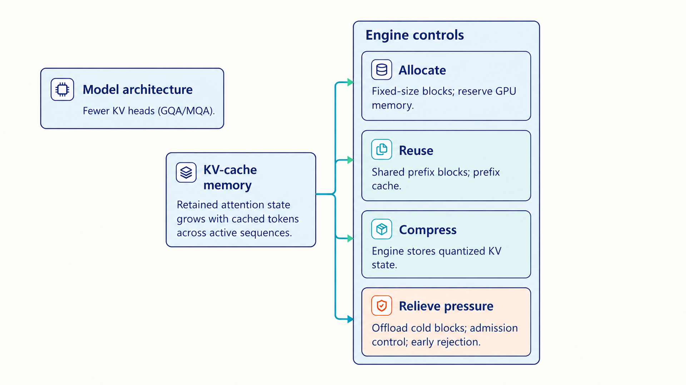
- Paged attention: An attention-memory scheme that stores KV state in fixed-size non-contiguous blocks and maps logical token positions to physical blocks.9
Paged allocation can leave unused space inside a partly filled block. This is internal fragmentation. Allocating blocks as a sequence grows can reduce unused reserved memory. A reference count records how many active requests use a block, so several requests can share cached prefix blocks. When that count reaches zero, the engine may evict the block, removing it from the cache and making its memory available for reuse. A prefix cache may instead retain it for a later request.10 Prefix caching is valuable for shared system prompts, few-shot examples and repeated conversation prefixes.
For variable-length sequences with unshared KV state, replace \(B \times T\) with \(\sum_i T_i\). This estimates tensor bytes only. Deployment memory also needs allocator metadata and space for partly filled final blocks. Shared prefix blocks are counted once.
Note
Memory trace: paged KV-cache block allocation
Two sequences share a prefix and then grow independently:
- Sequences A and B share two immutable prefix blocks. A is then assigned three additional blocks, while B is assigned one additional block and one half-filled final block.
- With immediate private-block eviction in this example, A’s three private blocks return to the free list when A finishes, and the shared prefix remains because B still references it. The half-filled block exposes bounded internal fragmentation without requiring one contiguous maximum-length reservation.
- Conclusion: Blocks let memory follow each sequence’s actual length and let shared prefixes be stored once.
Quantizing KV state reduces bytes per element and can improve capacity, but conversion or unsupported-kernel overhead may offset the gain. In an implementation that supports KV offload, colder state can move from GPU memory to host memory or storage. This extends capacity at the cost of transfer latency. Admission control and early rejection protect the cache before pressure becomes an out-of-memory failure.
4.6 Fitting larger models and speeding up decode
The KV budget in Section 4.5 assumed that the weights fit on one GPU with room to spare. A 70-billion-parameter model in BF16 needs 140 GB for its weights alone, more than one 80 GB GPU holds. Even when a dense model fits, decoding repeatedly reads its weights to produce next tokens for the active batch, so memory bandwidth can limit interactive speed. Lower precision, splitting weights across GPUs and checking proposed tokens in batches address these limits. Serving several task-specific variants raises a related memory and routing problem. These choices change the serving bundle that must be evaluated and released.
With weight quantization, the engine stores weights in fewer bits, such as 8-bit integer or 8-bit floating-point formats (1 byte per weight) or 4-bit integers (half a byte plus per-group scale factors). The 70-billion-parameter model shrinks from 140 GB to about 70 GB at 8 bits. Decode then reads fewer bytes per token, which can raise throughput when the engine has efficient kernels for that format on the target GPU. Post-training methods such as GPTQ and AWQ choose the rounded values to limit the error they introduce, but the accuracy loss still depends on the model, the bit width, and the task.11 A quantized model is a new candidate that passes the quality gates of Section 4.9 and Chapter 7 before release.
Tensor-parallel serving splits each layer’s weight matrices across the GPUs of one server, using the tensor parallelism introduced in Section 2.2 and worked through in Section 2.4. Each generation step requires repeated collective communication between those GPUs. The exact operations depend on the tensor layout, with all-reduce used in the described matrix-splitting arrangement. Frequent communication makes a fast interconnect such as NVLink important. One replica now occupies several GPUs, and its KV capacity depends on how weights, cache state, and buffers are distributed across them.
Note
Example: placing a 70-billion-parameter model
Assume 80 GB GPUs used at 0.90, BF16 weights of 140 GB, 4 GB of activations and buffers per GPU, and a model with 80 layers and 8 key/value heads of width 128 (\(d_{\mathrm{KV}} = 1{,}024\)):
- Per-token KV cost: 2 × 80 × 1,024 × 2 bytes = 327,680 bytes.
- Two GPUs: 2 × 72 = 144 GB usable, minus 140 GB of weights and 8 GB of buffers, leaves no room for the cache. The placement fails.
- Four GPUs: 4 × 72 = 288 GB usable, minus 140 GB and 16 GB, leaves 132 GB, about 403,000 cached tokens or 50 sequences of 8,000 tokens.
- Two GPUs with 8-bit weights: 144 − 70 − 8 = 66 GB, about 25 sequences of 8,000 tokens, if the quantized model passes its quality gates.
- Conclusion: Weight format and tensor-parallel width together set how many concurrent long requests one replica holds. Cost per completed request also depends on measured request rate and GPU cost.
Speculative decoding uses a small draft model to propose the next \(k\) tokens, then lets the large target model check their probabilities in one forward pass. For a proposed token \(t\), let \(p(t)\) be its target probability and \(q(t)\) its draft probability, both given the same prefix. A token sampled from the draft has \(q(t)>0\). The method accepts it with probability \(\min(1,p(t)/q(t))\) and keeps accepted proposals in order. At the first rejection, it discards later proposals and samples a replacement from the positive values of \(p(t)-q(t)\) over the possible next tokens, rescaled to sum to one. If all \(k\) proposals pass, it samples one additional token from the target’s next-token distribution. These acceptance and replacement rules preserve the target distribution.12
Suppose the only possible next tokens are A and B. The draft gives them probabilities 80% and 20%, while the target gives them 60% and 40%. An A proposal passes with probability 60 ÷ 80 = 0.75, so accepted A contributes 0.80 × 0.75 = 0.60. A B proposal always passes, contributing 0.20. The remaining 0.20 consists of rejected A proposals. The target-minus-draft difference is negative for A and positive for B, so every replacement is B. Its total probability becomes 0.20 + 0.20 = 0.40. The resulting token follows the target’s 60%/40% probabilities. This illustrative one-token calculation shows why accepting draft samples alone would be insufficient.
To estimate tokens per target pass, assume that each proposal is accepted independently with the same probability \(\alpha\). One replacement or bonus token is always added. Keeping the first draft token has probability \(\alpha\), keeping both the first and second has probability \(\alpha^2\), through \(\alpha^k\). The mean is \(1+\alpha+\cdots+\alpha^k\). For \(0\leq\alpha<1\), this equals \((1-\alpha^{k+1})/(1-\alpha)\). At \(\alpha=1\), all proposals pass and the pass yields \(k+1\) tokens. With \(\alpha=0.7\) and \(k=4\), the mean is about 2.8 rather than one. The independent-acceptance assumption simplifies this estimate.13 The distribution-preserving method uses the token probabilities at each prefix. Speed gains depend on acceptance, draft-model cost, and the existing batch size, so they need measurement for the intended traffic.
Fine-tuning adapts a pretrained model to a task by further training on task examples. An adapter (LoRA) stores pairs of smaller trained matrices. Each pair’s product supplies an update to a selected layer. The layer adds this update to its base weight matrix to obtain the task-specific weights, while the stored base weights remain frozen.14
Consider an illustrative base matrix with 4 rows and 6 columns, containing 24 weights. A LoRA update can use the column \(B=[1,2,3,4]^{\mathsf T}\) and the row \(A=[1,2,3,4,5,6]\). Their product \(BA\) has 4 rows and 6 columns; its entry at row 2, column 3 is 2 × 3 = 6. Every column is a scaled copy of the first column. Matrix rank is the smallest number of columns needed to form all columns by adding scaled copies of them, so this nonzero update has rank one. It describes the matrix, unlike a training worker’s rank identifier. The factors contain 4 + 6 = 10 trainable values, compared with 24 for an unrestricted update. The 24 base weights remain stored and frozen. Rank-one factors can represent only this restricted family of updates. Wider factors allow more independent update directions and require more trainable values.
The adapter’s size depends on the selected layers, factor widths, and numeric format. Its task quality needs evaluation. An engine that supports adapters can serve several variants using one set of base weights. Each adapter’s identity becomes part of the serving bundle, and the router of Section 4.7 must send a request only to replicas that have its adapter loaded.
4.7 Reusing prefixes with cache-aware routing
Paged allocation makes KV state reusable inside one engine. A stateless load balancer selects a replica without using request history, so successive turns can reach different replicas and miss an already cached prefix. Stateful routing uses that history, the length of the reusable prefix, and current load when choosing among eligible replicas.
Round robin sends successive requests to eligible replicas in a repeating order. It is a useful comparison baseline and can be a deployment policy when eligible replicas are equivalent and request history does not matter. LLM engines are often not equivalent at a moment in time: they can hold different model versions, adapters, prefix blocks, queue lengths, and free memory. In the routing policy proposed here, cache-aware routing first filters to healthy compatible endpoints, then estimates reusable prefix state and balances that benefit against queue pressure.15
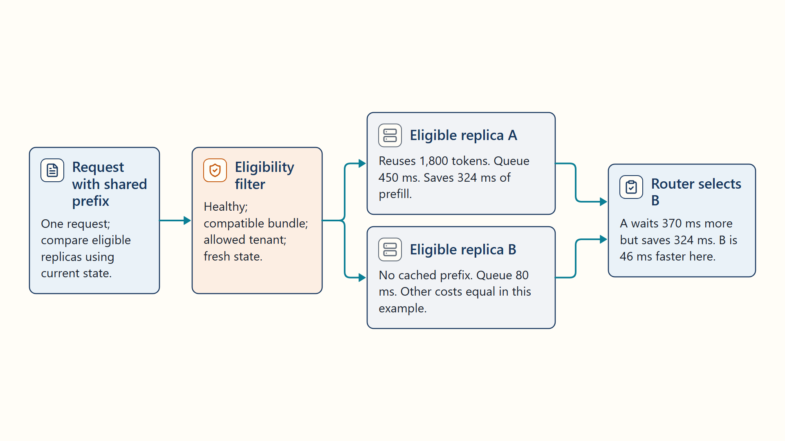
A cache hit avoids part or all of prefill, but an overloaded endpoint’s queue delay can outweigh the prefill-time saving.
SGLang’s RadixAttention indexes reusable token prefixes in a radix tree. Its paths group prefixes by the token sequences they share. RadixAttention evicts eligible unused cached leaves when capacity is needed.16 This reuse mechanism differs from PagedAttention’s block layout and from continuous batching’s execution schedule. Reuse still requires compatible model, tokenizer, adapter and cache state, and permission to reuse state across the relevant tenants. So the router depends on timely engine state, a maximum allowed age for that state, a fallback when state is missing, and observability that records why an endpoint was selected.
Eligibility is evaluated before preference: an endpoint must be healthy, serve the requested bundle, accept the request’s policy and context limits, and expose state no older than the freshness bound. Among eligible endpoints, estimated completion time combines queue delay, uncached prefill time, and decode time. Missing cache metadata contributes zero assumed reuse rather than an invented cache hit.
Note
Example: prefix cache affinity versus queue delay
The router compares two eligible endpoints for one request with a long shared prefix:
- Endpoint A: Can reuse 1,800 prompt tokens but has an estimated 450 ms queue.
- Endpoint B: Has no prefix cache but an estimated 80 ms queue.
- Measured prefill rate: The engine saves 0.18 ms per reused token, so A avoids about 324 ms of prefill.
- Net comparison: A’s extra queue is 370 ms, larger than the 324 ms cache saving.
- Decision: Endpoint B has lower estimated latency for this request. The result changes if queue or prefill cost changes.
4.8 Scaling capacity while limiting cold starts
Stateful routing uses the replicas that already exist. Sustained queue growth can require the control plane to add capacity, yet loading large weights from the storage chosen in Chapter 3 can take minutes. The controller must account for that delay before demand exceeds warmed capacity.
Autoscaling that reacts too strongly to raw one-second metrics can oscillate because one long prompt can temporarily consume free KV blocks or inflate TTFT. The controller described here uses a smoothed demand signal, a cooldown, and separate scale-up and scale-down policies.17 For the GPU-bound serving workload in this example, queue depth, waiting tokens, available cache blocks, and SLO error describe pressure more directly than CPU utilization. A deployment must confirm that relationship on its own workload.
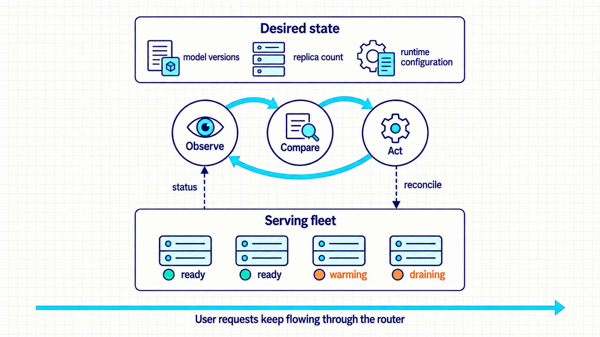
Note
Example: replica demand with warm-up latency and cooldown
This example uses a scheduled traffic increase, while the controller described in the preceding paragraph reacts to measured demand. Traffic is scheduled to rise in five minutes. Until the added replicas are ready, demand stays within the three ready replicas’ capacity:
- Measured capacity: One warmed replica sustains 6 requests/s for the target prompt-output mix while meeting both TTFT and ITL objectives.
- Planned demand: Traffic is scheduled to reach 25 requests/s in five minutes, so 25 ÷ 6 requires five warmed replicas after rounding up.
- Current capacity: Three ready replicas can serve 18 requests/s. The controller requests three more: two to reach five demand replicas and one warmed spare for failure headroom.
- Warm-up timeline: Node allocation takes 70 seconds, image and weights take 95 seconds, kernel warm-up takes 25 seconds, and health stabilization takes 20 seconds: about 210 seconds before traffic.
- Hysteresis: Scale-down begins only after demand stays below three-replica capacity for ten minutes, avoiding a reversal during the 210-second scale-up delay.
- Conclusion: Preparing capacity for the scheduled increase requires a measured warmed service rate and enough lead time for allocation, loading and readiness checks.
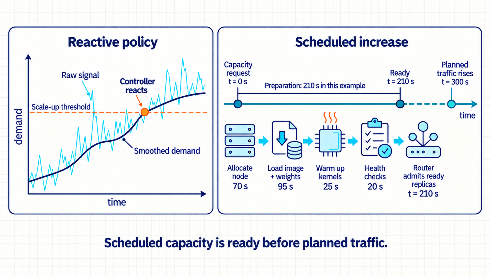
A cold start prepares a new serving replica before it can accept traffic. That work includes allocating a node, pulling the engine image, loading weights, initializing kernels or graphs, warming caches, passing health checks, and joining the router. Node-local NVMe can reduce remote-transfer cost, but host-memory caches and other storage paths can be faster. The useful choice is measured on the actual hardware, format, cache state, and contention.18 Shared filesystems or enhanced object storage can feed many nodes. Peer-to-peer distribution reduces a burst of simultaneous downloads against one storage endpoint. Quantized weights also shorten this transfer because fewer bytes move.
- Prefill/decode disaggregation: Placing prompt processing and token decoding in different worker pools and transferring KV state between them.19
Disaggregation lets compute-rich prefill workers and memory-bandwidth-oriented decode workers scale independently. Its success depends on a fast KV-transfer path, correct request handoff, compatible cache formats, and routing that keeps the two pools balanced. The transfer can erase the gain when interconnect latency or serialization is too high.
A measured decision compares the prefill/decode imbalance with KV-transfer cost. If separate pools save 90 ms of queue and compute time but serialization and transfer add 120 ms at the target context length, the combined request is slower and the unified engine remains the better placement for that workload.
4.9 Releasing serving bundles through deployment gates
The control plane can now add and specialize capacity. Release gates check the complete serving bundle’s compatibility, performance, quality, safety and rollback behavior before promotion.
Section 1.2 introduced the serving bundle as the release unit. For this service, its immutable identity includes weights, tokenizer, engine image, hardware compatibility, quantization format, adapters, prompt defaults, runtime configuration, and release metadata.
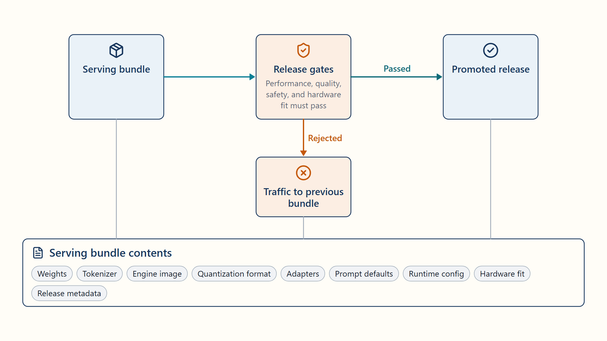
A tokenizer change, quantized kernel, sampling default, structured-output parser, or engine version can change behavior while weights remain unchanged. Bundle identity attaches benchmark and evaluation results to the actual deployable unit.
| Gate | What it catches | Evidence |
|---|---|---|
| Compatibility | Missing kernels, unsupported GPU, schema mismatch | Startup and interface tests |
| Performance | TTFT/ITL/throughput or memory regression | Constant-load, gradually rising-load, sudden-load, recorded-request replay and long-duration tests |
| Quality | Reasoning, factuality, or structured-output regression | Fixed test prompts and evaluator cases reserved from tuning |
| Safety/domain | Policy or customer-specific failure | Regression suites and adversarial cases that probe policy failures |
| Runtime | Unhealthy rollout, missing telemetry, failed rollback | Canary traces, shadow runs that keep candidate outputs out of user responses, and rollback drills |
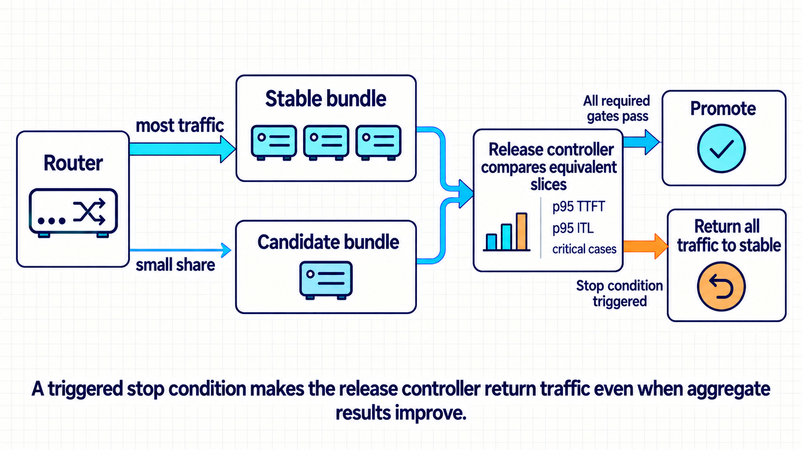
Blue/green deployment keeps stable and candidate environments available so traffic can switch between them after checks pass. A canary exposes the candidate to a small, controlled share of live traffic before wider promotion. A deployment can combine both. Synthetic and shadow tests can precede live exposure. The release gate compares performance and quality on equivalent workload slices.20 Rollback restores the whole bundle rather than only the weights. Chapter 7 develops the quality measurements these gates consume.
Note
Example: canary traffic progression and health gates
A candidate bundle with faster first tokens is compared with the stable bundle on the same traffic:
- Comparable slice: Stable and candidate bundles each receive replayed requests stratified by prompt length, output length, tenant class, and retrieval use.
- Performance gate: Candidate p95 TTFT is 4% lower and p95 ITL is 2% higher, and both remain inside the predefined non-regression bounds.
- Quality gate: The candidate passes 499 of 500 critical cases, but the single failure is an authorization case with a zero-tolerance stop condition.
- Decision: Traffic returns to the stable bundle and the entire candidate bundle remains available for reproduction. Favorable aggregate latency does not override the critical failure.
- Conclusion: A canary decision combines equivalent workload slices with explicit stop conditions and whole-bundle rollback.
Chapter 4 summary
Key serving principles and trade-offs established in this chapter:
- Core mechanisms: TTFT measures delay to the first token, while ITL measures delay between later tokens. Stage traces separate queue, prefill, and decode time. Continuous batching rebuilds the batch every iteration under a token budget. Paged KV blocks let cache memory follow actual sequence length and support prefix reuse. Quantization and tensor-parallel placement affect whether a model fits and how much KV room remains. Speculative decoding can raise the number of tokens emitted per target pass.
- Governing trade-offs: Wider batches can raise throughput but also ITL. Cache affinity saves prefill but can lose to queue delay. Lower-precision weights free memory at a possible quality cost. More tensor-parallel GPUs can add KV room but also communication and cost.
- Failure modes & defenses: Freshness limits reject router state that is too old for the policy. Scaling policy accounts for warm-up time, with spare capacity or admission limits for demand that arrives too quickly. A whole-bundle canary with stop conditions limits initial request exposure. Shared state and lasting external side effects need separate controls.
Chapter checkpoint
Review Questions 16–22 in Appendix B, Section B.1, to test latency stages, batching trade-offs, KV-cache routing, and the latency, cost, KV-budget, and model-placement calculations before moving to retrieval.
Note
Carry-forward result
Fixed weights cannot contain policy updates made after training. The grounded-answer service supplies current, authorized passages with each question so the model can use that new evidence. Chapter 5 builds the retrieval path.
Hugging Face. (n.d.). Text generation (Transformers main documentation). https://huggingface.co/docs/transformers/main/en/llm_tutorial. The text-generation guide shows tokenizer input IDs, generation of output tokens and decoding those IDs to text in a decoder-only path.↩︎
Jones, C., Wilkes, J., & Murphy, N. (with Smith, C.). (2016). Service level objectives. In B. Beyer, C. Jones, J. Petoff, & N. R. Murphy (Eds.), Site reliability engineering: How Google runs production systems. O’Reilly Media. https://sre.google/sre-book/service-level-objectives/. The SRE chapter defines objectives on selected indicators. The percentile, threshold and window here are choices for this service.↩︎
Zhong, Y., Liu, S., Chen, J., Hu, J., Zhu, Y., Liu, X., Jin, X., & Zhang, H. (2024). DistServe: Disaggregating prefill and decoding for goodput-optimized large language model serving. In 18th USENIX Symposium on Operating Systems Design and Implementation (pp. 193–210). USENIX Association. https://www.usenix.org/conference/osdi24/presentation/zhong-yinmin. DistServe separates first-token and later-token objectives. Per-request average time per output token and a distribution of inter-token intervals require separate reporting and declared measurement points.↩︎
Zhong, Y., Liu, S., Chen, J., Hu, J., Zhu, Y., Liu, X., Jin, X., & Zhang, H. (2024). DistServe: Disaggregating prefill and decoding for goodput-optimized large language model serving. In 18th USENIX Symposium on Operating Systems Design and Implementation (pp. 193–210). USENIX Association. https://www.usenix.org/conference/osdi24/presentation/zhong-yinmin. DistServe analyzes common prefill/decode bottlenecks. Batch, model, context, hardware, kernels, and parallelism can change the balance.↩︎
Yu, G.-I., Jeong, J. S., Kim, G.-W., Kim, S., & Chun, B.-G. (2022). Orca: A distributed serving system for transformer-based generative models. In 16th USENIX Symposium on Operating Systems Design and Implementation (pp. 521–538). USENIX Association. https://www.usenix.org/conference/osdi22/presentation/yu. Orca introduces iteration-level scheduling and selective batching. Reported speedups apply to its tested hardware, engine and workloads.↩︎
vLLM project. (2025). Optimization and tuning (v0.10.2; V1 guidance). https://docs.vllm.ai/en/v0.10.2/configuration/optimization.html. vLLM 0.10.2 V1 documents decode-priority mixed batches and chunking to the token budget.↩︎
vLLM project. (n.d.). Engine arguments (v0.10.2). https://docs.vllm.ai/en/v0.10.2/configuration/engine_args.html. The cited vLLM 0.10.2 API documents the example settings.↩︎
Ainslie, J., Lee-Thorp, J., de Jong, M., Zemlyanskiy, Y., Lebron, F., & Sanghai, S. (2023). GQA: Training generalized multi-query transformer models from multi-head checkpoints. In Proceedings of the 2023 Conference on Empirical Methods in Natural Language Processing (pp. 4895–4901). Association for Computational Linguistics. DOI:
10.18653/v1/2023.emnlp-main.298. https://aclanthology.org/2023.emnlp-main.298/. GQA defines intermediate KV-head counts, with MQA as one KV head. These are model-architecture choices that require quality evaluation.↩︎Kwon, W., Li, Z., Zhuang, S., Sheng, Y., Zheng, L., Yu, C. H., Gonzalez, J. E., Zhang, H., & Stoica, I. (2023). Efficient memory management for large language model serving with PagedAttention. In Proceedings of the 29th Symposium on Operating Systems Principles (pp. 611–626). ACM. DOI:
10.1145/3600006.3613165. https://arxiv.org/abs/2309.06180. PagedAttention Sections 4.1–4.2 define block tables, sharing and copy-on-write.↩︎Zheng, L., Yin, L., Xie, Z., Sun, C., Huang, J., Yu, C. H., Cao, S., Kozyrakis, C., Stoica, I., Gonzalez, J. E., Barrett, C., & Sheng, Y. (2024). SGLang: Efficient execution of structured language model programs. Advances in Neural Information Processing Systems, 37, 62557–62583. https://papers.nips.cc/paper_files/paper/2024/hash/724be4472168f31ba1c9ac630f15dec8-Abstract-Conference.html. RadixAttention retains reusable prefixes and evicts eligible unused leaves.↩︎
Frantar, E., Ashkboos, S., Hoefler, T., & Alistarh, D. (2023). GPTQ: Accurate post-training quantization for generative pre-trained transformers. In The Eleventh International Conference on Learning Representations (ICLR 2023). https://arxiv.org/abs/2210.17323. Sections 3–5 describe how GPTQ limits quantization error and test OPT and BLOOM models at 3 and 4 bits. Lin, J., Tang, J., Tang, H., Yang, S., Chen, W.-M., Wang, W.-C., Xiao, G., Dang, X., Gan, C., & Han, S. (2024). AWQ: Activation-aware weight quantization for on-device LLM compression and acceleration. In Proceedings of Machine Learning and Systems 6. https://proceedings.mlsys.org/paper_files/paper/2024/hash/42a452cbafa9dd64e9ba4aa95cc1ef21-Abstract-Conference.html. Section 3 describes weight scaling based on activation statistics. Tests cover text models and models that process text and images.↩︎
Leviathan, Y., Kalman, M., & Matias, Y. (2023). Fast inference from transformers via speculative decoding. In Proceedings of the 40th International Conference on Machine Learning (PMLR 202, pp. 19274–19286). https://proceedings.mlr.press/v202/leviathan23a.html. Section 2.3 and Algorithm 1 give the acceptance and replacement rules. Appendix A.1 proves that they preserve the target distribution. Section 3.1 derives the expected tokens per target pass using independent acceptance with the same probability for each proposal.↩︎
Leviathan, Y., Kalman, M., & Matias, Y. (2023). Fast inference from transformers via speculative decoding. In Proceedings of the 40th International Conference on Machine Learning (PMLR 202, pp. 19274–19286). https://proceedings.mlr.press/v202/leviathan23a.html. Section 2.3 and Algorithm 1 give the acceptance and replacement rules. Appendix A.1 proves that they preserve the target distribution. Section 3.1 derives the expected tokens per target pass using independent acceptance with the same probability for each proposal.↩︎
Hu, E. J., Shen, Y., Wallis, P., Allen-Zhu, Z., Li, Y., Wang, S., Wang, L., & Chen, W. (2022). LoRA: Low-rank adaptation of large language models. In The Tenth International Conference on Learning Representations (ICLR 2022). https://arxiv.org/abs/2106.09685. Section 4.1 defines frozen base weights and low-rank updates. Section 4.2 discusses task switching and batching limits when an update is merged into the base weights.↩︎
SGLang project. (n.d.). SGLang model gateway. https://docs.sglang.io/docs/advanced_features/sgl_model_gateway. The SGLang gateway documents health and cache/load policies.↩︎
Zheng, L., Yin, L., Xie, Z., Sun, C., Huang, J., Yu, C. H., Cao, S., Kozyrakis, C., Stoica, I., Gonzalez, J. E., Barrett, C., & Sheng, Y. (2024). SGLang: Efficient execution of structured language model programs. Advances in Neural Information Processing Systems, 37, 62557–62583. https://papers.nips.cc/paper_files/paper/2024/hash/724be4472168f31ba1c9ac630f15dec8-Abstract-Conference.html. Section 3 and Algorithm 1 describe radix-tree prefix reuse and cache management.↩︎
Kubernetes project. (n.d.). Horizontal Pod Autoscaling. https://kubernetes.io/docs/concepts/workloads/autoscaling/horizontal-pod-autoscale/. Kubernetes documents stabilization and scaling policies to reduce flapping.↩︎
Fu, Y., Xue, L., Huang, Y., Brabete, A.-O., Ustiugov, D., Patel, Y., & Mai, L. (2024). ServerlessLLM: Low-latency serverless inference for large language models. In 18th USENIX Symposium on Operating Systems Design and Implementation (pp. 135–153). USENIX Association. https://www.usenix.org/conference/osdi24/presentation/fu. ServerlessLLM studies multi-tier loading and locality-sensitive scheduling.↩︎
Zhong, Y., Liu, S., Chen, J., Hu, J., Zhu, Y., Liu, X., Jin, X., & Zhang, H. (2024). DistServe: Disaggregating prefill and decoding for goodput-optimized large language model serving. In 18th USENIX Symposium on Operating Systems Design and Implementation (pp. 193–210). USENIX Association. https://www.usenix.org/conference/osdi24/presentation/zhong-yinmin. DistServe separates the phases and accounts for bandwidth-aware placement.↩︎
Breck, E., Cai, S., Nielsen, E., Salib, M., & Sculley, D. (2017). The ML test score: A rubric for ML production readiness and technical debt reduction. In 2017 IEEE International Conference on Big Data (pp. 1123–1132). IEEE. DOI: 10.1109/BigData.2017.8258038. https://storage.googleapis.com/gweb-research2023-media/pubtools/4156.pdf. The ML Test Score recommends pre-serving tests, important-slice checks, canarying and rollback. The bundle contents, thresholds and stop rules here define this service’s release policy.↩︎